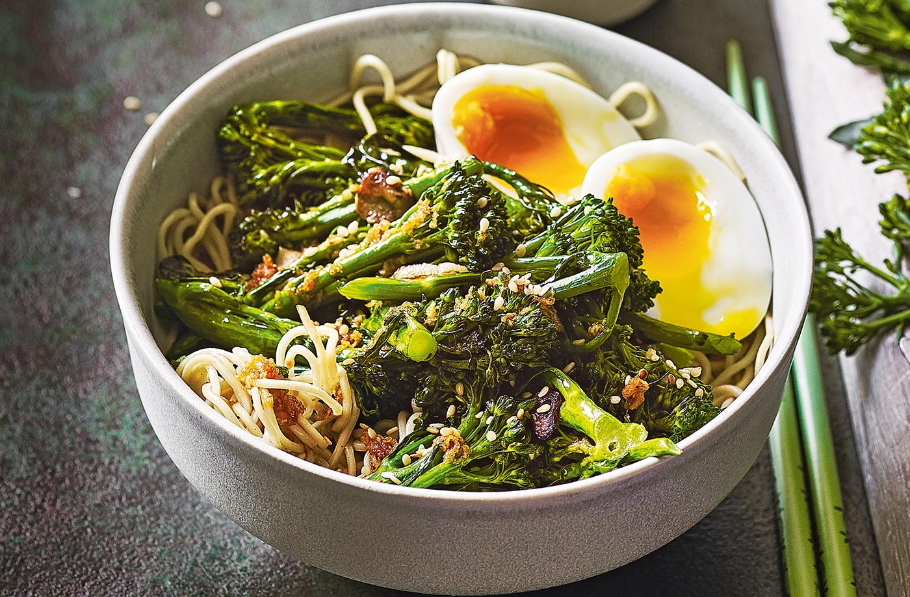

Noodles recipe

!5 min dinner !
15 Minute Lo Mein! Made with just soy sauce, sesame oil, a pinch of sugar, ramen noodles or spaghetti noodles, and any veggies or protein you like. SO YUMMY!
Ingredients
- Noodles
- Salte
- 3 cups water lb sushi-grade raw salmon or desired raw fish of choice
- 1 cup salsa
- soy sauce
Steps
- Shake up your sauce.
- Cook your noodles
- Toss it all together with your extras (veg, protein, green onions) in a hot skillet or wok.